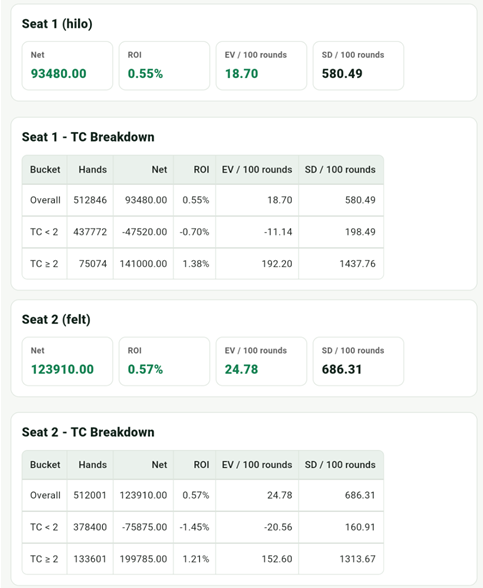

補足：FELT
FELT は +1、+2、-2 の 3 種類のカード値を使う平衡マルチレベルカウントシステムです。コアとなる 5 枚の低カード（3–6）のカウント強度を Hi-Lo より高めながら、平衡構造を維持して True Count 換算による精密なベット判断が可能です。
Hi-Lo はすべての低カード（2–6）を +1、高カード（10–A）を -1 としますが、FELT では 3–6 を +2 に引き上げて最も有利な低カードのシグナルを強化し、10 と A を -2 に下げて全体の平衡を維持します。代わりにトラッキングの難易度が Hi-Lo より上がり、発牌スピードの中で異なるカウント強度を扱う必要があります。
FELT カード値
| カード | カウント |
|---|---|
| 3–6 | +2 |
| 2、7 | +1 |
| 8、9 | 0 |
| 10、J、Q、K、A | -2 |
True Count 換算
FELT は平衡システム（1 デッキ分で RC が 0 に戻る）のため True Count 換算が必要です。TC = RC / 残りデッキ数。換算方法は Hi-Lo と同じですが、カウント幅が広い（-2 から +2）ため、同じ配牌組み合わせでも RC と TC の絶対値は Hi-Lo より大きくなります。
インシュランス
| 状況 | 基本戦略 | Deviation |
|---|---|---|
| ディーラー A | インシュランスなし | TC >= +6 でインシュランス |
サレンダー Deviations
| プレイヤー手札 | ディーラー | Deviation |
|---|---|---|
| 15 | 10 | TC >= 0 でサレンダー |
| 15 | A | TC >= +2 でサレンダー |
| 15 | 9 | TC >= +2 でサレンダー |
ハードハンド Deviations
| プレイヤー手札 | ディーラー | 基本戦略 | Deviation |
|---|---|---|---|
| 16 | 10 | H / R | サレンダー不可かつ TC >= 0 でスタンド |
| 15 | 10 | H / R | サレンダー不可かつ TC >= +4 でスタンド |
| 16 | 9 | ヒット | サレンダー不可かつ TC >= +4 でスタンド |
| 16 | A | ヒット | サレンダー不可かつ TC >= +4 でスタンド |
| 13 | 2 | ヒット | TC >= -1 でスタンド |
| 13 | 3 | ヒット | TC >= -2 でスタンド |
| 12 | 2 | ヒット | TC >= +3 でスタンド |
| 12 | 3 | ヒット | TC >= +2 でスタンド |
| 12 | 4 | スタンド | TC >= 0 でスタンド（TC < 0 でヒット） |
| 12 | 5 | スタンド | TC >= -1 でスタンド（TC < -1 でヒット） |
| 12 | 6 | スタンド | TC >= -1 でスタンド（TC < -1 でヒット） |
ダブル Deviations
| プレイヤー手札 | ディーラー | Deviation |
|---|---|---|
| 11 | A | TC >= +1 でダブル |
| 10 | 10 | TC >= +5 でダブル |
| 10 | A | TC >= +7 でダブル |
| 9 | 2 | TC >= +1 でダブル |
| 9 | 7 | TC >= +3 でダブル |
| 8 | 5 | TC >= +4 でダブル |
| 8 | 6 | TC >= +2 でダブル |
アプリのシミュレーション統計
以下は Hi-Lo と FELT をそれぞれ 500,000 ラウンド走らせた結果です。Hi-Lo は Bet Ramp 4/8/12/16/20、FELT は 3/6/9/12/15 を使用しています。Hi-Lo の ROI は 0.55%、EV / 100 は 18.7、SD / 100 は 580.49；FELT の ROI は 0.57%、EV / 100 は 24.78、SD / 100 は 686.31 です。

この数値を両システムの優劣として直接比較することはあまり意味がありません。TC のスケールも bet ramp の構造も異なるためです。この数値が示しているのは FELT の特性です。カード値の幅が広い（−2 〜 +2）ため TC の振れも大きく、SD / 100 が自然に高くなります。デッキが有利方向に傾くと FELT はより強いシグナルを検知し、有利な局面での EV が高くなる一方、逆方向の振れも同様に増幅されます。